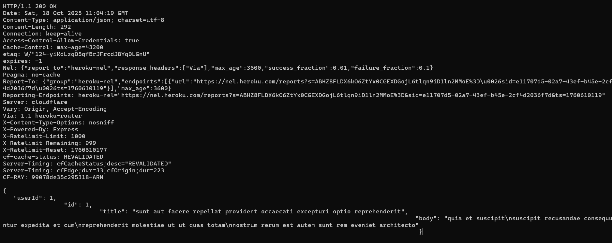
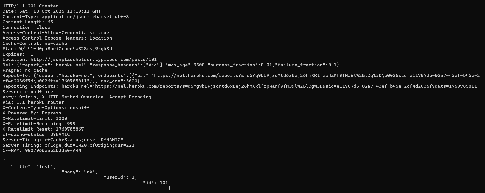
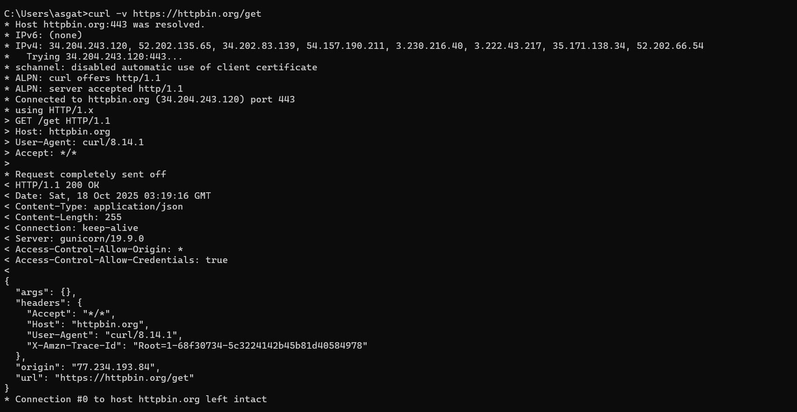
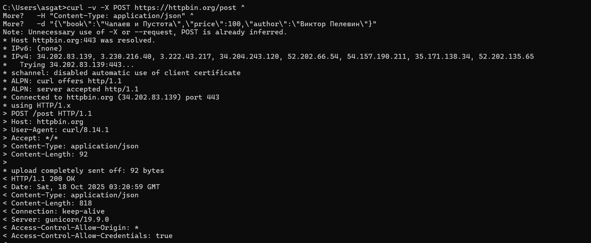
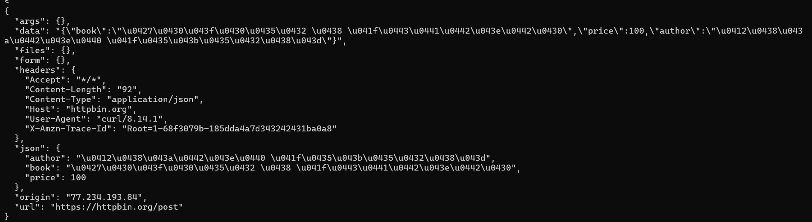
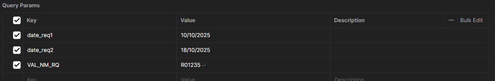
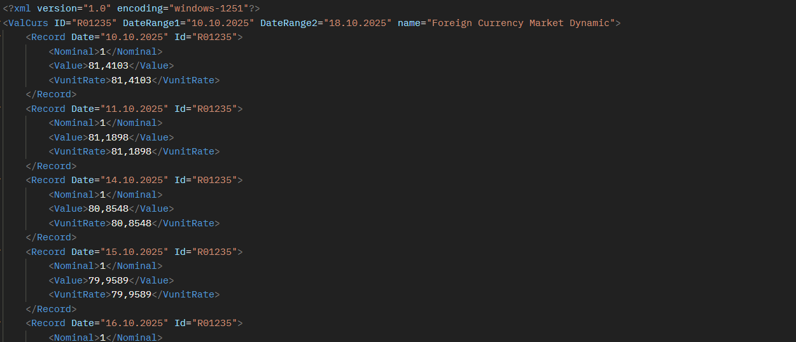

Отчет по работе с HTTP
tags: HTTP, ReportsРабота с HTTP и API
Студент: Хоанг Ван Куан
Задачи
- Отправьте GET и POST запросы на любой веб-ресурс в CLI с помощью Telnet или netcat.
- Отправьте запросы с помощью cURL.
- Отправьте с его помощью GET-запрос для получения курса одной выбранной валюты за выбранный период. Используйте API Банка России: https://www.cbr.ru/development/sxml/
1. Отправьте GET и POST запросы на любой веб-ресурс в CLI с помощью Telnet или netcat.
Подключить с API
Эта команда используется для открытия TCP-соединения с сервером API
telnet jsonplaceholder.typicode.com 80
GET-запроса через Telnet
GET /posts/1 HTTP/1.0
Host: jsonplaceholder.typicode.com
Сервер получает запрос, ищет публикацию с идентификатором 1 и отправляет ответ HTTP, который включает статус (например, HTTP/1.1 200 OK) и содержимое данных (обычно JSON) этой публикации

POST-запроса через Telnet
POST /posts HTTP/1.0
Host: jsonplaceholder.typicode.com
Content-Type: application/json
Content-Length: 42
{"title":"Test","body":"ok","userId":1}
Сервер получает запрос, обрабатывает JSON-данные в теле запроса, создает новый ресурс и возвращает HTTP-ответ

2. Отправьте запросы с помощью cURL
GET-запроса через cURL:
GET — один из основных HTTP-методов (существуют также POST, PUT, DELETE и т. д.). Он используется для запроса данных с сервера
Базовый запрос GET с помощью cURL
echo -e "cURL -v [https://httppbin.org/get](https://httppbin.org/get)
Здесь, cURL отправляет GET-запрос на конечную точку: https://httpbin.org/get
-v включает режим “verbose” для отображения подробностей запроса/ответа

POST-запроса через cURL:
POST — это HTTP-метод, используемый для отправки данных на сервер
echo -e "cURL -v -X POST https://httppbin.org/post -d "{\"book\":\"Чапаев и Пустота\","price\":100,\"author\":\"Виктор Пелевин\"}"
Здесь
-X POST указывает метод POST
-d: тело запроса
Кроме того, можно добавить
-H “Content-Type: application/json” - сообщить серверу, что данные имеют формат JSON


В результате, сервер ответит JSON, содержащим информацию запроса
3. API Банка России: https://www.cbr.ru/development/sxml/
- Открыть Postman и выбрать метод GET
- Вставить URL API Банка России с нужными параметрами
GET-запроса
Например, чтобы получить стоимость доллара США с 10/10/2025 по 18/10/2025
Параметры
Ниже вы можете увидеть соответствующие ключи и значения

Результат
После нажатия Send Postman отправляет GET-запрос на сервер и получает XML-файл с курсами валют
